APTA Hall of Famers. 17 National Titles. 53+ Staff Titles Combined.
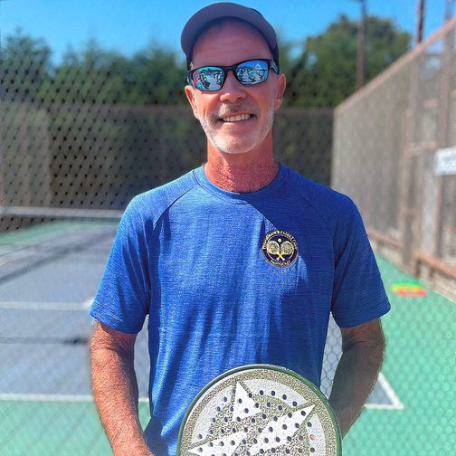
Co-Director · APTA Hall of Fame
Mike Gillespie has been at the center of competitive platform tennis for over three decades. Inducted into the APTA Hall of Fame, he has won 13 national titles across mens and mixed doubles and has coached players at every level from club beginners to national tournament finalists.
Mike co-founded Performance Paddle Camp in 1998 with a simple thesis: most paddle instruction was borrowed from tennis and did not account for what actually wins paddle matches. The system he and Ana developed over the next 28 years has become the standard that other programs measure themselves against.
Beyond camp, Mike has served as head platform tennis professional at some of the most competitive clubs on the East Coast and continues to compete at the national level.
APTA Hall of Fame Profile →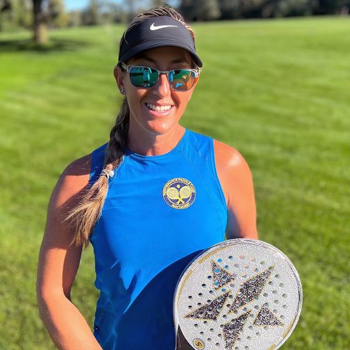
Co-Director · APTA Hall of Fame
Ana Brzova is one of the most decorated womens platform tennis players in the history of the sport. An APTA Hall of Famer with 4 national titles in womens doubles, she is known for a tactical approach to the game that emphasizes positioning, partnership, and composure under pressure.
As co-director of Performance Paddle Camp, Ana brings a perspective that is rare in paddle instruction. She teaches the game from the vantage point of someone who has won at every level and understands what separates good players from great ones. Her work with womens teams and mixed doubles partnerships has produced some of the most improved players in the sport.
Ana teaches with a style that is direct, specific, and relentlessly focused on what you can control on the court.
APTA Hall of Fame Profile →Every coach on our staff is a nationally ranked player or teaching professional. Combined, the team holds 50+ national titles.
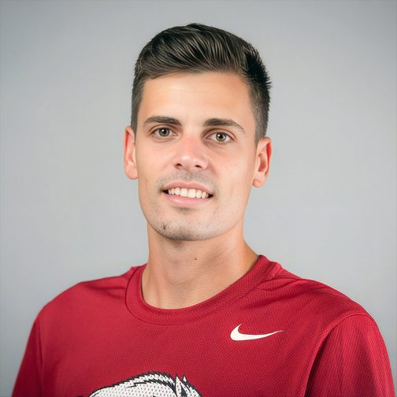
Director of Racquets · Stanwich Club
Jose is the Director of Racquets at the Stanwich Club in Greenwich, CT, overseeing tennis, paddle, and pickleball at one of the most prestigious private clubs in the state. Originally from the Canary Islands, he was an ITA All-American and first-team All-SEC tennis player at the University of Arkansas.
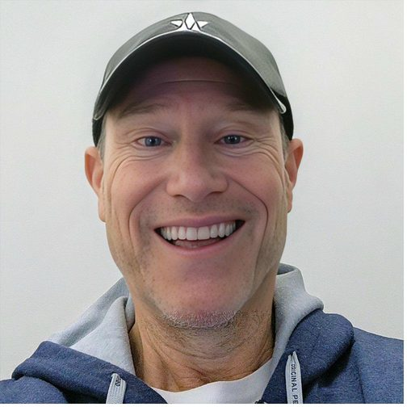
Hall of Fame · 8x National Champion
Scott is a Platform Tennis Hall of Famer and eight-time Mens National Champion who dominated the sport with partner Flip Goodspeed from 1996 to 2010, including five consecutive titles. Now based in Chicago, he is one of the most respected paddle teaching pros in the game.
APTA Hall of Fame Profile →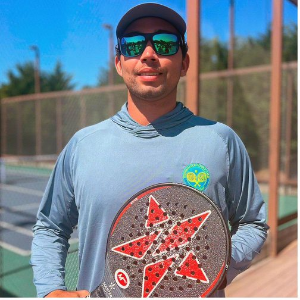
Head Platform Tennis Pro · Westchester CC
Enrique is the Head Platform Tennis and Tennis Professional at Westchester Country Club, one of the premier venues in the sport and host of APTA national events. A former NJCAA Singles and Doubles National Champion from Spain, he played Division I tennis at UT Arlington and competes on the NRT tour.
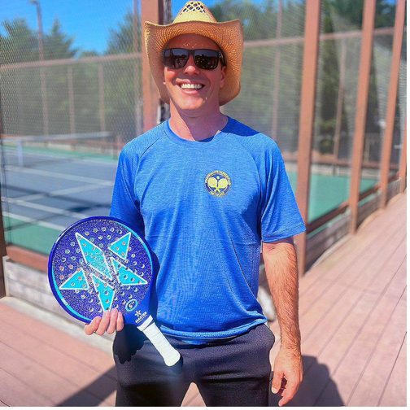
NRT Competitor · Junior Development Coach
Guga is a competitive platform tennis pro on the NRT circuit and APTA Team Nationals veteran based in Dallas. A respected coach who has developed junior national champions, he brings high-level competitive experience and teaching skill to the Performance Paddle Camp staff.
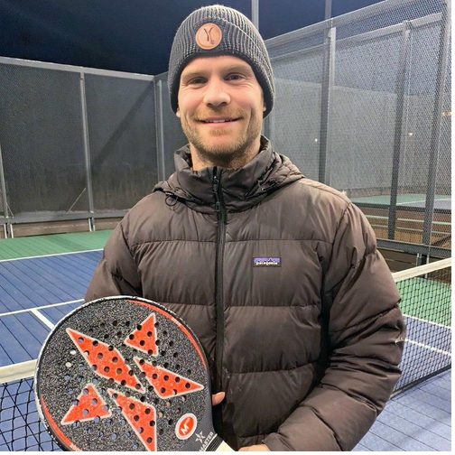
Nationally Ranked · Stonington, CT
Dan is a nationally ranked platform tennis competitor based at Stonington COMO, known as one of the most prolific tournament players in the sport across the East Coast circuit. A former Drexel University tennis player and submarine engineer by trade, he also runs paddle camps in Stonington.
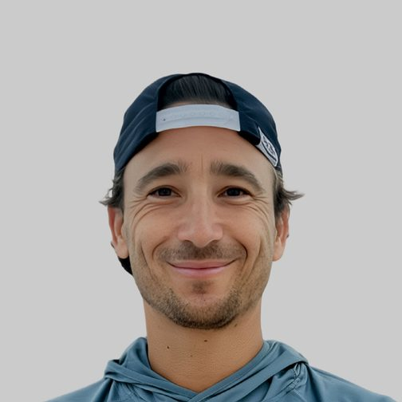
Director of Racquets · Boathouse & Field Club
Max LePivert is originally from Nice, France and is currently the Director of Racquets at the Boathouse & Field Club on Martha's Vineyard. Max has been a top 10 nationally ranked player for the last 8 years, reaching the semi-final of the 2016 Nationals, winning multiple APTA tournaments, 8 President's Cups, and two Blanchard Cup titles along with a high ranking of #3 in the country.
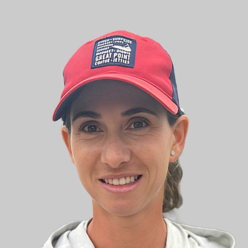
Nationally Ranked #2 · 3x Mixed National Champion
Roxy comes from Romania where she had a distinguished junior career. In 2010, she moved to Connecticut to become a full-time Tennis pro and to learn the game of paddle. Roxy is currently ranked #2 in the nation with Gabi Niculescu and has won more than two dozen APTA tournaments, including 3 consecutive Mixed National Championships.
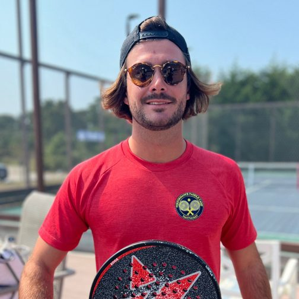
Racquets Director · Ridgewood Country Club
Louis Volclair is a professional racquet sports athlete and instructor, currently serving as Racquets Director at Ridgewood Country Club in New Jersey. Originally from Nantes, France, Louis is well known in both the North American tennis and platform tennis communities. A top-ranked men's platform tennis competitor, he regularly competes in major tournaments and brings over eight years of teaching experience.
Top-Ranked Competitor · Championship Experience
Amy Shay is a highly accomplished platform tennis competitor and experienced instructor, widely respected in the national paddle community. A top-ranked player, Amy has competed in and won numerous major tournaments. Known for her positive energy, sharp strategic mind, and strong doubles instincts, she is passionate about helping players elevate their game.
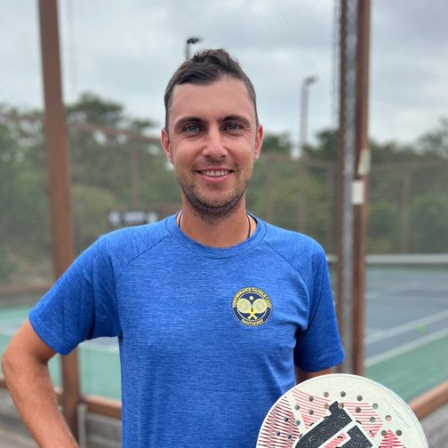
Elite Competitor · National Tournament Player
Anton Bobytski is a highly accomplished racquet sports professional and elite platform tennis competitor. Known for his athleticism, court awareness, and strategic approach to the game, Anton has competed at the highest levels and consistently performs in major national tournaments. He brings a thoughtful, detail-oriented coaching style that focuses on positioning, shot selection, and match strategy.
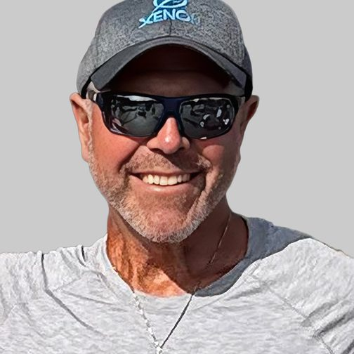
Seasoned Competitor · Doubles Specialist
Jerry Albrikes is a seasoned racquet sports professional and accomplished platform tennis competitor. Known for his calm demeanor and strategic mindset, Jerry brings years of competitive experience and high-level instruction to the court. He has competed in major tournaments and is respected for his deep understanding of the game, particularly in doubles strategy and court positioning.
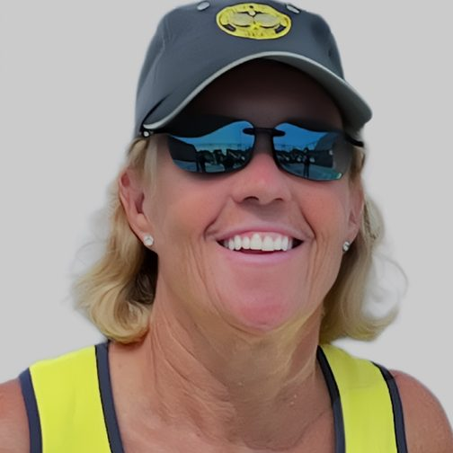
APTA Hall of Fame · National Champion
Bobo Mangan Delaney is a highly respected racquet sports professional and competitor, known for her leadership, competitive success, and dynamic presence on court. A top-ranked platform tennis player, Bobo has competed in and won numerous major national tournaments, establishing herself as one of the premier players in the women's game. With years of teaching and mentoring experience, she brings energy, strategic insight, and a passion for developing players to every session.
APTA Hall of Fame Profile →28
Seasons Running
17
National Titles (Directors)
53+
Staff Titles Combined
4
APTA Hall of Famers
No one has taught this game longer.